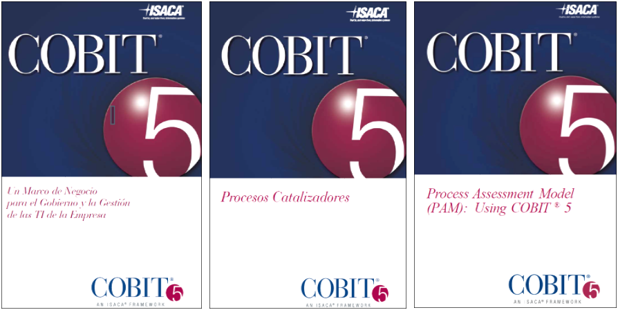

Bibliografía

- Fuente: COBIT® 5 Framework-Spanish.pdf, Un Marco de Negocio para el Gobierno y la Gestión de las TI de la Empresa COBIT 5 © 2012 ISACA®
- Fuente: COBIT® 5 Enabling-Spanish.pdf, Procesos Catalizadores COBIT 5 © 2012 ISACA®
- Fuente: COBIT® 5 Enabling-Spanish.pdf, Modelo de Evaluación de Procesos (PAM) COBIT 5 © 2012 ISACA®